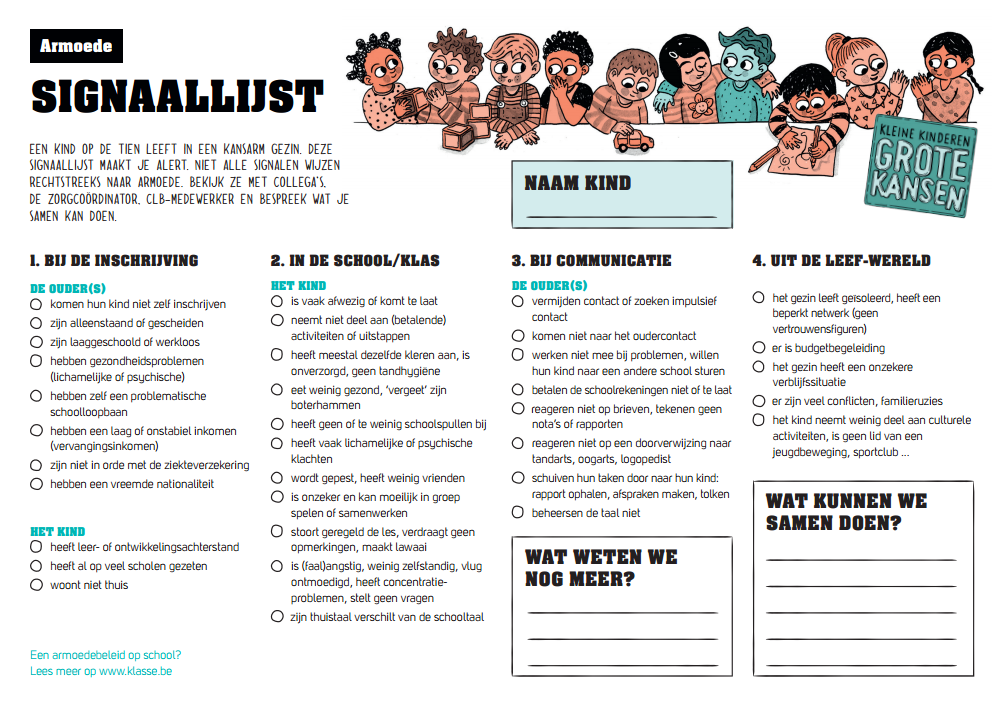

De uitwerking van het project.
Het huidig onderwijssysteem sluit kansarme kinderen uit door o.a. hoog inschrijvingsgeld te vragen. Dit mondt uit in kansarme jongeren die sneller met school stoppen door mislukking en schaamte, terwijl zij een volwaardige plaats binnen het onderwijs zouden moeten krijgen. Andere negatieve gevolgen voor leerlingen zijn het missen van de ondersteuning van thuis, het ontwikkelen van de eigen taal en het vaker vertonen van gedragsproblemen. Dit resulteert onvermijdelijk in een minder goede leerhouding.
We geven de kinderen meteen een gevoel dat ze slachtoffer, crimineel, zot e.d. zijn en bestempelen hen al te gemakkelijk met woorden als achterlijk, lui, storend, dom ... Hierdoor gaan ze het gevoel krijgen dat hun toekomst al vastligt. De self fullfilling prophecy is hier een veelvoorkomend feit. We moeten de leerlingen meer aanmoedigen om te participeren in de maatschappij, ze gaan dan inzien dat ze dingen kunnen en hierin ook kunnen groeien. Elk kind heeft zijn positieve en negatieve punten. Het is aan de leerkracht om het beste in hen naar boven te halen en ze te laten schitteren. Dit zou tevens hun welbevinden een enorme boost geven.
De jeugd heeft verdeelde reacties op haar schoolcarrière. Enerzijds neemt school een belangrijke plaats in hun leven. Het betekent voor velen een sleutel voor een betere toekomst. Ze ontmoeten er hun vrienden. Ze komen er in contact met verschillende personen met wie ze anders niet in contact zouden komen. Ze leren ervan. Ook de vermenging van cultuur speelt hier een rol. Het is zinvol om autochtone met allochtone jongeren reeds op jonge leeftijd aan elkaar te introduceren. Ze spreken over de eigen cultuur en die van de ander. Ze vergelijken deze met elkaar. Het is dus een zinvolle invulling voor hun uitbreiding van de cultuur. Anderzijds hebben veel jongeren het ook vaak lastig met school door hun uiteenlopende thuissituaties. Ze haten het onderwijs daarom echter niet. Ze beseffen dat ze minstens een middelbaar diploma moeten hebben om een plek te vinden binnen onze samenleving. Zo belanden ze niet in de werkloosheid. Dit alles is helaas mooier op papier, in de praktijk is dit niet zo vanzelfsprekend voor veel kansarme jongeren. Hun schoolcarrière is vaak getekend door mislukkingen: slechte rapporten, zitten blijven, doorschuiven van ASO naar TSO naar BSO. Ze geven ook zonder schroom en onverbloemd hun tekorten weer, o.m. geen studiemotivatie, luiheid, … Ze geven aan dat ouders helpen en ondersteunen maar dat dit ook vaak een te grote druk weergeeft. Ze praten ook vaak openlijk over hun financiële moeilijkheid thuis. Het onderwijs zelf is dan misschien wel wettelijk gratis, maar het prijskaartje schiet toch al snel de hoogte in: boekentassen, boeken, turnspullen, bosklassen, uitstapjes, tombola’s, …
Er zijn dus klaarblijkelijk diverse hindernissen in hun onderwijscarrière. Zij erkennen eigen tekortkomingen, maar er zijn meer factoren in het spel. Ouders die slecht geïnformeerd zijn, het gebrek aan middelen en de hoge of lage verwachtingen van ouders worden onder meer aangehaald. Ook binnen de school (of het schoolsysteem) liggen hindernissen: er zijn beperkingen door de te hoge kosten, er is het gebrek aan informatie over studierichtingen, de nog steeds erg theoretische insteek, het gebrek aan steun van het onderwijzend personeel en de negatieve reputatie van bepaalde studierichtingen. Een groot knelpunt om hier te verbeteren is de lage mate van motivatie en zelfvertrouwen bij deze leerlingen. De keuze van de studierichting is een ander knelpunt. Zij kiezen vaak overhaast, zonder over genoeg informatie te beschikken met het uitzicht op snel en gemakkelijk geld verdienen. Dit wordt beïnvloed door een aantal (stigmatiserende) verwachtingen vanuit het onderwijssysteem.
Men moet kansarme kinderen dus zien te stimuleren op school. We moeten leren als een afleidingsmanoeuvre proberen in te voeren. Zo kan de vaak slechte thuissituatie gedeeltelijk worden uitgesloten. Ze willen vaak zelf niet stoppen met school, maar omstandigheden thuis zoals geldnood of andere vereiste bijstand verplicht hen hiertoe. Verder zou de school zich moten profileren als een springplank naar een meer hoopvolle toekomst. Zo kan er vanuit hun leefwereld ook eens vertrokken worden: niet een opstel over ‘ik ga op reis’, maar b.v. over ‘mijn hobby's zijn’. Taalvergemakkelijking is ook een eventueel verbeterpunt: kinderen uit kansarme gezinnen leren vaak geen al te brede waaier aan woordenschat, zoals kinderen uit normale of gegoede gezinnen dat aanleren. Risico’s die gepaard gaan met armoede zijn onder meer geldgebrek, verzwakking van de algemene cultuur, stigmatisering en een gebrekkige dialoog tussen ouders en school. Als leerkracht moeten we openstaan om met de ouders een goede communicatie op te bouwen: interesse tonen en geen vooroordelen vellen. Laat hen en het kind zich welkom voelen. De stress en angst die ze hun heel leven lang al kennen, moeten we zien te overkomen.
Het creëren van een veilige omgeving voor zowel de leerlingen als de ouders is een zeer belangrijk element in een school. Hier gaan de leerlingen zich namelijk uiten, dus wanneer deze veilig aanvoelt gaan de leerlingen een meer open houding tonen.
Wanneer er duidelijke afspraken en richtlijnen zijn in een school is er automatisch ook een veiligere omgeving, maar wat ook zeer belangrijk is is dat deze goed gecommuniceerd worden met de ouders.
De leerlingen zouden beschikking moeten hebben over de nodige materialen. Vele leerlingen merken namelijk dat ze al vanaf het begin van het schooljaar niet mee kunnen strijden omdat ze de nodige materialen niet hebben. We kijken hier dan bijvoorbeeld naar een rekenmachine, pen en papier, sportkledij, etc.
De leerlingen hebben ook nood aan een goede informering over de mogelijke studiekeuzes die ze kunnen volgen. Deze informering begint al in de lagere school. Op dit moment zijn er jongeren die een studierichting kiezen op goed geluk en zo in het watervalsysteem terecht komen.Ze weten bijvoorbeeld ook niet dat er een specialisatie volgt na bepaalde studierichtingen.
Een goed kansarmoedebeleid begint bij het herkennen van signalen. Dit kan aangepakt worden aan de hand van een signaallijst. Deze lijst maakt leerkrachten alert op signalen die uitgezonden worden door kansarme leerlingen. Verschillende onderdelen worden onder de loep genomen, onder andere; de inschrijving, de situatie in de klas/ op school, de communicatie en de leefwereld. Door als leerkracht deze lijst door te nemen en vinken te plaatsen bij de onderdelen die van toepassing zijn, kan men de kansarme leerlingen in zijn klas opsporen. In samenwerking met de zorgcoördinatoren en de CLB-medewerkers vormt dit een basis in het beleid rond kansarmoede.
De relatie tussen de school en het gezin van de schoolgaande jongere is uiterst belangrijk.
Veel communicatieproblemen kunnen weggewerkt worden door te werken aan respectvolle communicatie met de
ouders.
De school kan dan bijvoorbeeld ook een werkgroep communicatie oprichten. Dit is een vast team dat kan
werken rond verschillende aspecten van communicatie. De werkgroep heeft als taak de communicatie van de
school permanent te bekijken en jaarlijks, op basis van ervaring, nieuwe maatregelen te suggereren. Een
belangrijke vraag die men zich dan moest stellen is: “Hoe kunnen we de communicatie van onze school
toegankelijker en duidelijker maken?” Open communicatie houdt in dat elke ouder en elke leerling
bijvoorbeeld op de hoogte moet zijn van het beleid dat de school voert rond de schoolkosten. Dit wordt
verder uitgelegd in paragraaf 2.8 .
Een goede communicatie is vrijwel onmogelijk zonder een goed onderbouwde kennis over armoede, hierdoor is
het belangrijk dat het schoolteam zich goed informeert. Dit kan onder andere gedaan worden door
opleidingen en/of nascholingen te volgen.
Opleidingen: omgaan met diversiteit, basisvorming armoede, omgaan met armoede in de school
Nascholing: hele school betrokken, maatschappelijke veranderingen opvolgen, specialisatie
Het is het beste dat de school een vast financieel team aanstelt, zij houden zich bezig met de financiële problematiek. Ook is het een goed idee om twee vaste vertrouwenspersonen aan te stellen binnen dit team. De leden van dit team zouden over het volgende profiel moeten beschikken: empathie en kennis over (kans)armoede. Een voorbeeld van een taak van deze werkgroep is het opstellen van een lijst met alle verplichte, noodzakelijke en niet-verplichte uitgaven voor de ouders. Op school kan er ook een sociale kas opgericht worden, deze wordt dan ook het best door het financiële team bewaakt. Het team biedt ook hulp bij de inschrijvingen op school, ze helpen de ouders bij het invullen van de aanvraagformulieren en van de schooltoelagen.
De ouders zelf zouden de keuze moeten krijgen op het gebied van waar ze de schoolspullen kopen. Ook is een keuze van betalingsmethoden in de school zeker aan te raden. Waar ook zeker aandacht aan besteed moet worden is het verspreiden van al de betalingen. Vaak komen schoolfacturen samen op één moment, dit moet veranderen.
Een beleid dat aandacht heeft voor kansarmoede is zich er van bewust dat de school niet alles zelf kan oplossen. Je hebt namelijk als schoolteam beperkingen. Vaak is de problematiek zo complex dat je steun nodig hebt van partners:
Het Centra voor Leerlingenbegeleiding staat in voor het ondersteunen en ontwikkelen van het zorgbeleid in
de scholen. Dit zorgbeleid dient ervoor te zorgen dat elk kind (ook de meest kwetsbare, kansarme
leerlingen) de meest optimale kansen krijgt om de eindtermen te behalen.
Website: http://onderwijs.vlaanderen.be/nl/centra-voor-leerlingenbegeleiding
In het Netwerk tegen Armoede werken 59 verenigingen, in Vlaanderen en Brussel samen. Het doel van deze
vzw is het uitbannen van armoede en sociale uitsluiting, het wegwerken van vooroordelen, de verbetering
van de beeldvorming rond mensen in armoede.
Website: http://www.netwerktegenarmoede.be/
Het Openbaar Centrum voor Maatschappelijk Welzijn is een openbare instantie per gemeente in België. De
OCMW's hebben tot doel elke persoon in de mogelijkheid te stellen een leven te leiden dat beantwoordt
aan de menselijke waardigheid. Het OCMW verstrekt diensten aan armen, zorg aan ouderen ook psychische
hulp aan de inwoners.
Website: https://www.hasselt.be/nl/ocmw-diensten
Vaak worden kansarme leerlingen als slachtoffer keken of al een kind met problemen. Dit zouden we niet mogen doen omdat deze jongeren niet anders zijn dan andere jongeren. Ze hebben dezelfde interesses dan de andere leerlingen alleen is de omstandigheden waarin deze leerlingen leven anders. We mogen de leerlingen geen etiket geven. De leerkracht moet interesse tonen in het persoonlijk verhaal van de leerlingen.
“Er zijn geen goede of slechte leerlingen. Er zijn alleen goede of slechte leerkrachten, dat geloof ik tenminste. Jammer genoeg is het beroep ongewaardeerd, als is het maar door de financiële omstandigheden, de werkomstandigheden, de voordurende werkdruk. Als er iets is dat we zouden moeten veranderen, dan zijn dat de werkomstandigheden van de leerkrachten. Dat gaat de rest ook verbeteren.”
“Leerkrachten moeten beter betaald worden. Maar ze zouden dan ook meer gecontroleerd moeten worden. Want het zijn zij toch die de toekomst maken.”
“Leerkrachten hebben het heel druk en raken snel gefrustreerd. Ze werken dat uit op de jongeren en roepen, dreigen sneller.”
“Er zou ook een CLB moeten zijn voor leerkrachten. De jongeren zien dat zij ook problemen hebben. Ze hebben bijvoorbeeld veel vooroordelen.”
“Omdat de klassen te groot zijn, hebben de leerkrachten minder tijd en kunnen ze leerlingen met persoonlijke problemen minder aangepast ondersteunen. Dat is een serieus probleem waar veel te weinig rekening mee gehouden wordt.”
“Leerkrachten hebben het moeilijk. Ze krijgen vaak geen respect meer en het is soms een sport om ze te plagen. Alleen verbaast het me, dat er altijd toch ook leerkrachten zijn die wel het respect krijgen dat ze verdienen. Die leerkrachten behandelen ons met respect. Ze schrijven ons niet onmiddellijk af, maar geloven in ons.”
“Als je elke keer opnieuw hoort dat je het niet goed genoeg doet, vermindert je zelfvertrouwen”
Leerlingen vinden het altijd leuk wanneer de leerkrachten voorbeelden krijgen waarin ze zich kunnen vinden. Geef geen voorbeeld over een leuke vakantie als je weet dat sommige leerlingen in de klas nooit op vakantie kunnen gaan. Het klassieke gezinssituatie mag ook niet als norm genomen worden. Niet elk gezin bestaat uit mama, papa, en twee kindjes. Niet iedereen heeft het even goed. Om dit probleem binnen de klas te beperken kan je je vragen aanpassen. Bv. Wie heeft er een auto. Je kan beter vragen “Wie gaat er al eens alleen weg?”
Beide culturen vormen een belangrijke rol voor de leerlingen. Deze moeten in grote lijnen overeenkomen. Wanneer dit niet overeenkomt gaat een leerling zicht onwennig voelen. Dit kan als gevolg hebben dat er pestgedrag of uitsluiting. Gebeurd dit bij kansarme leerlingen, dan gaan deze leerlingen zich slecht voelen op school of in de klas. Dit kan ernstige gevolgen hebben op hun motivatie en hun prestaties.